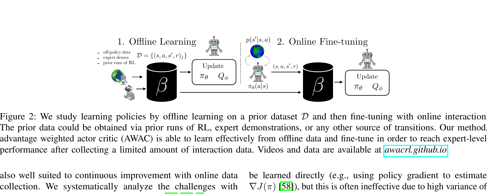

AWAC: Accelerating Online Reinforcement Learning with Offline Datasets
Nair 等 · 2020 · CoRL 2020 · arXiv:2006.09359 · Zotero 9YDHBHWS
AWAC 用 off-policy critic 学价值，再按指数优势加权最大似然更新 actor，能先吃历史数据、再平滑转在线。
§1 Introduction：为什么好的离线初始化反而可能妨碍在线继续学习
机器人 RL 的现实工作流通常不是纯离线或从零在线，而是先利用演示、旧任务和次优轨迹初始化，再在新任务上收集少量在线经验。行为克隆容易继承数据缺陷；保守离线 RL 虽能避免分布外误估，却可能把 policy 锁在旧数据附近，在线数据到来后仍不敢快速改进。
AWAC 用 off-policy critic 吸收离线与在线 replay，再以指数优势权重更新 actor：数据中比当前 value 更好的动作得到更大权重，差动作被弱化。actor update 仍只回归 replay 中出现过的动作，因此离线阶段稳定；随着在线 buffer 扩展，行为分布自然更新，约束不再固定在旧数据上。
展开原文 · 目标场景
“leverage large amounts of offline data and then quickly perform online fine-tuning”
§2 Related Work：DAPG、SACfD、离线 RL 与连续改进
DAPG 等先 imitation 再 on-policy policy gradient，能用演示但在线样本效率低；SACfD 把 demonstration 放进 replay，却在离线预训练时容易产生 bootstrap error。BEAR 等保守离线方法保护数据分布，却会在 online finetuning 阶段过度保守。
AWAC 延续 AWR 的优势加权行为回归，同时用 actor-critic 在线更新 value，因而适合“offline pretrain → online improve”。它不是 VLA 专用方法：在大模型上还要解决视觉骨干是否冻结、action chunk 怎样定义优势、在线 replay 是否破坏预训练语义，这些正是 EXPO-FT、BORA 等工程化路线的后续问题。
§3 问题设定：SFT 到底漏掉了什么
VLA 预训练与 SFT 解决“从观测到动作的模仿”，但部署是闭环过程：动作会改变下一帧，错误会把策略带到演示没有覆盖的状态。纯离线方法难继续在线提高，纯在线方法又浪费已有演示并承担高探索成本。
off-policy critic 从历史演示与新在线数据共同学习；actor 仍在数据动作上做最大似然，但高优势动作获得指数更大权重。
展开原文 · 核心主张
“advantage weighted actor critic enables rapid learning of skills”
§4 方法总览：反馈信号怎么走
上一节明确了状态、动作与反馈，现在沿论文原图追踪训练信号。重点不是背模块名，而是判断：哪部分保持预训练先验，哪部分真的被 RL 改写。

1. 用离线/在线混合 replay 学 Q
replay 同时含离线演示与新在线交互。critic 通过 TD backup 学 $Q(s,a)$；混合采样让它既看到高质量示范，也看到当前策略真正会访问的失败状态，减少纯离线 Q 在部署时失真。
输入是什么：已经采集的专家演示、机器人交互轨迹或评测样本。每条数据通常包含观测、动作，以及可能存在的奖励或下一状态。
这一步究竟做什么：replay 同时含离线演示与新在线交互。critic 通过 TD backup 学 $Q(s,a)$；混合采样让它既看到高质量示范，也看到当前策略真正会访问的失败状态，减少纯离线 Q 在部署时失真。
输出到哪里：一个分数、奖励或价值估计，用来比较候选，而不是直接控制机器人。这个结果会交给下一步“计算数据动作相对当前策略的优势”继续处理。
为什么不能省略：只有生成候选而没有评价标准，模型不知道哪个结果更好；这一步把‘好坏’变成可比较的学习信号。
2. 计算数据动作相对当前策略的优势
对数据中的动作计算 $A(s,a)=Q(s,a)-V(s)$。这个差值不是绝对成功率，而是在同一状态下该动作比当前策略平均动作好多少，因此能把‘值得模仿’和‘只是出现在数据里’分开。
输入是什么：来自上一步“用离线/在线混合 replay 学 Q”的产物：一个分数、奖励或价值估计，用来比较候选，而不是直接控制机器人。本步骤还会按论文设置读取当前条件、时间步或训练信号。
这一步究竟做什么：对数据中的动作计算 $A(s,a)=Q(s,a)-V(s)$。这个差值不是绝对成功率，而是在同一状态下该动作比当前策略平均动作好多少，因此能把‘值得模仿’和‘只是出现在数据里’分开。
输出到哪里：经过本步骤处理、含义更明确的中间结果。这个结果会交给下一步“优势越高，行为克隆权重越大”继续处理。
为什么不能省略：学习算法只能从它见过的经历中改进；这一步决定训练数据是否覆盖成功、失败和恢复状态。
3. 优势越高，行为克隆权重越大
actor 做加权行为克隆，权重约为 $\exp(A/\lambda)$。高优势动作被强烈模仿，低优势动作仍受数据约束但影响较小；这比直接最大化 Q 更不容易选择 critic 没见过的 OOD 动作。
输入是什么：来自上一步“计算数据动作相对当前策略的优势”的产物：经过本步骤处理、含义更明确的中间结果。本步骤还会按论文设置读取当前条件、时间步或训练信号。
这一步究竟做什么：actor 做加权行为克隆，权重约为 $\exp(A/\lambda)$。高优势动作被强烈模仿，低优势动作仍受数据约束但影响较小；这比直接最大化 Q 更不容易选择 critic 没见过的 OOD 动作。
输出到哪里：经过本步骤处理、含义更明确的中间结果。这个结果会交给下一步“持续加入新交互并快速在线改进”继续处理。
为什么不能省略：它承担上下两步之间的接口；缺少它，前一步产生的信息无法以正确格式或正确含义传到下一步。
4. 持续加入新交互并快速在线改进
新 rollout 持续写回 replay 后，Q 与优势会随真实分布更新。AWAC 因而能从保守的离线初始化平滑过渡到在线改进，无需在切换时重启一个全新的策略。
输入是什么：来自上一步“优势越高，行为克隆权重越大”的产物：经过本步骤处理、含义更明确的中间结果。本步骤还会按论文设置读取当前条件、时间步或训练信号。
这一步究竟做什么：新 rollout 持续写回 replay 后，Q 与优势会随真实分布更新。AWAC 因而能从保守的离线初始化平滑过渡到在线改进，无需在切换时重启一个全新的策略。
输出到哪里：一个或多个候选未来、动作或轨迹，以及必要的中间状态。这是图中这条链路的最终产物，随后会进入真实执行、模型更新或指标评测。
为什么不能省略：它把前面得到的内部结果落实为可执行动作、可训练模型或可解释指标，完成从方法到结果的最后一步。
§5 机制细拆：动作、价值与更新边界
上图给出了宏观流程，但真正决定训练是否稳定的是三个接口：动作以什么粒度出现、反馈怎样变成可学习信号、哪些参数允许被更新。
§6 目标函数：把直觉压缩成可检查的量
前一节说清了信号路径，这里把核心优化目标写成教学化公式。读公式时依次检查：回报影响谁、数据支持在哪里、预训练策略受到什么约束。
- $A(s,a)$
- critic 估计的动作优势
- $\lambda$
- 控制权重尖锐度的温度
- $D$
- 历史与在线经验的混合数据
离线 replay 先启动，再无缝加入在线数据持续更新 critic 与 actor，因此避免从零探索。
§7 训练与评测：数字是在什么条件下得到的
只看最终成功率会隐藏数据预算、仿真/真机差异和基座强弱。本节把论文的实验对象与比较关系放回同一张表。
| 策略与动作 | off-policy critic 从历史演示与新在线数据共同学习；actor 仍在数据动作上做最大似然，但高优势动作获得指数更大权重。 |
|---|---|
| 训练反馈 | TD bootstrap 提供 Q，当前策略下的基线形成 advantage；不需要显式拟合 behavior policy 的密度。 |
| 更新方式 | 离线 replay 先启动，再无缝加入在线数据持续更新 critic 与 actor，因此避免从零探索。 |
| 实验覆盖 | 论文用 HalfCheetah 分析离线到在线难点，并在仿真和真实机器人上测试灵巧手、开抽屉、旋转阀门等任务。 |
| 关键对照 | 纯 BC 不会超越数据，纯离线保守方法在线改进慢；AWAC 用隐式 KL 约束保持数据支持，同时允许价值驱动的在线提升。 |
§8 结果怎么读：证据、因果与可迁移结论
模拟与真实机器人实验显示，历史数据显著缩短了灵巧手、开抽屉和阀门旋转等技能的学习时间。
纯 BC 不会超越数据，纯离线保守方法在线改进慢；AWAC 用隐式 KL 约束保持数据支持，同时允许价值驱动的在线提升。
AWAC 是理解现代 residual/离线到在线 VLA 方法的最小原型：critic 选数据，actor 仍像加权 SFT。
§9 复现与工程检查
前一节判断了证据强度，复现时还要把训练信号对齐、时间尺度和数据统计逐项落地，否则“同名算法”也可能得到完全不同的结果。
- 指数权重需截断或数值稳定化；混合 replay 的离线/在线比例要记录；critic 更新频率会直接改变 actor 权重。
- 先跑通不加 RL 的预训练/SFT 基线，并保存逐任务成功率与失败视频。
- 同时记录环境步数、真实墙钟时间、人工介入次数、更新次数和推理延迟。
- 把奖励、终止、action chunk mask 与归一化统计做成可视化单元测试。
§10 适用边界与研究启发
指数权重会放大 critic 误差，温度与 replay 数据配比需要谨慎控制。
AWAC 是理解现代 residual/离线到在线 VLA 方法的最小原型：critic 选数据，actor 仍像加权 SFT。